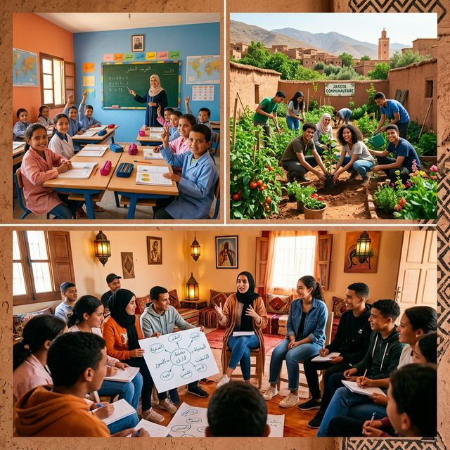

شاهد الأثر الحقيقي الذي نصنعه معاً في مجتمعنا من خلال مشاريع ومبادرات جمعية شباب ألبان

تنظيم فصول أسبوعية للدعم في الرياضيات واللغات لتلاميذ السلك الإعدادي.
حملة دورية لتنظيف الشوارع الرئيسية وإزالة النقاط السوداء للنفايات بمشاركة 100+ متطوع.
تحويل أرض مهملة إلى حديقة عامة ومتنفس للأسر، وزراعة 50 شجرة ظل.
التدخل لإصلاح وإعادة تأهيل أجزاء متضررة من شبكة الماء الشروب بالدوار.
بطولة كروية صيفية تجمع 16 فريقاً محلياً لنشر روح التسامح والتنافس الشريف.
توزيع محافظ وأدوات مدرسية متكاملة على 200 تلميذ يتيم ومن أسر معوزة.
تقديم مئات الاستشارات للأسر و إجراء فحوصات لمرضى السكري والضغط.
نهدف لفك معاناة الأسر مع ندرة المياه من خلال حفر بئر جديد وتشييد خزان مزود بمضخة شمسية.
تهيئة الطريق الرابط بين الدوار والمركز لتسهيل مرور النقل المدرسي وسيارات الإسعاف وفك العزلة.
تجهيز أزقة الدوار بمصابيح شمسية ذكية لضمان سلامة التنقل الليلي للأطفال والمسنين.